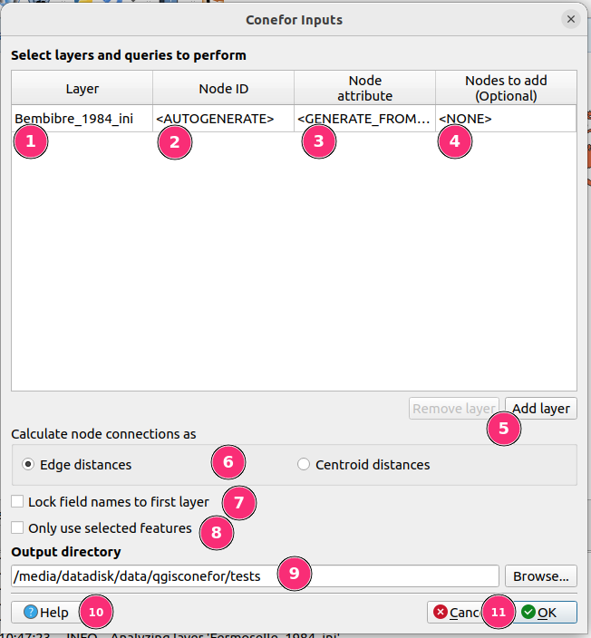
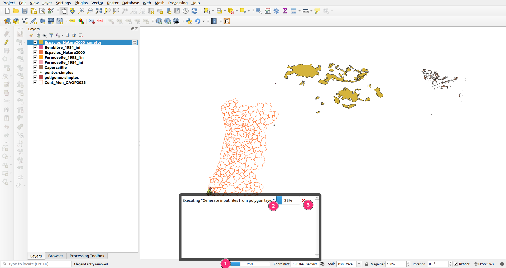
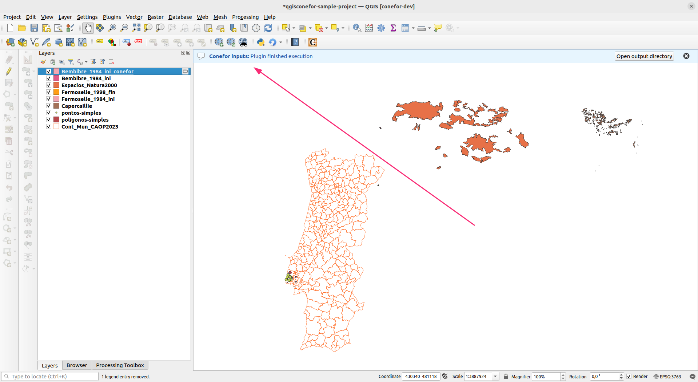
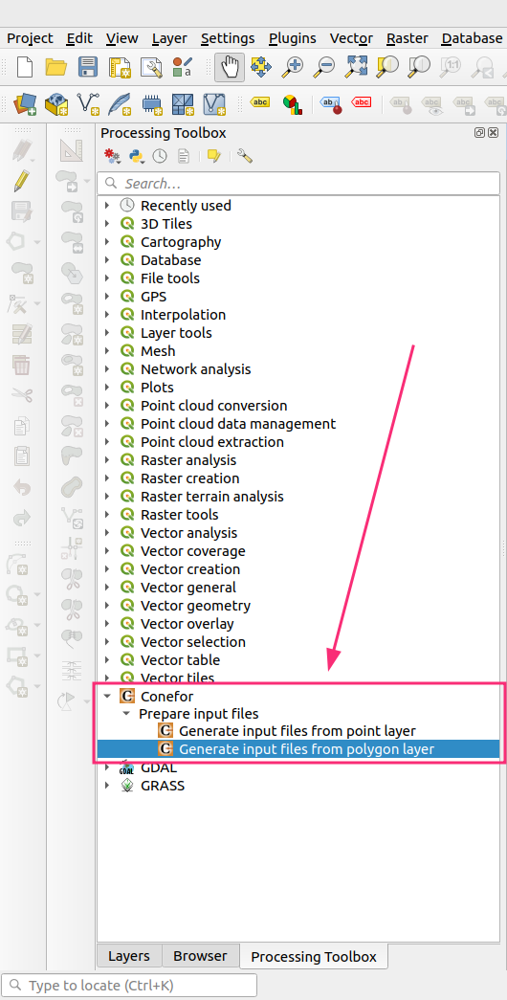

User guide¶
QGIS Conefor is a plugin for the Open Source GIS software QGIS that allows to interact with the Conefor application.
This plugin includes an interface which can be used for preparing inputs to use by Conefor as a separate application.
Running Conefor algorithms from inside QGIS
This plugin also aims to provide a bridge between QGIS and Conefor, allowing you to run Conefor's landscape connectivity analysis algorithms from inside QGIS, through the QGIS Processing framework/toolbox.
This feature is still work-in-progress and is therefore not available yet. When ready, it will present a convenient environment for landscape and habitat analysis, enabling Conefor algorithms to be directly integrated in more complex workflows through models and scripts and use all other GIS algorithms included in the QGIS processing framework/toolbox.
Stay tuned for future updates on the landing of this feature.
Once installed, the plugin tools can be reached in different places:
- From the main menu: vector > Conefor inputs
- The Vector toolbar also shows a button to launch the plugin dialog
- Processing toolbox (see below, "Using Conefor inside QGIS" paragraph)
QGIS toolbars
In QGIS the toolbars can be activated/deactivated by using the following menu:
View > toolbars
The content of a toolbar may vary depending on what tools/plugins are installed/active in a specific QGIS installation. The Conefor plugin is part of the Vector Toolbar toolbar.
Usage¶
This plugin is used for generating the Conefor input files (nodes and connections) from geospatial layers and then running the standalone Conefor application with the these input files. For this you can either:
- Use the plugin's main dialog
- Use the Processing algorithms present in Processing toolbox > Conefor > Prepare input files
Preparing inputs for Conefor¶
Using the dedicated Conefor plugin dialog¶
The icon/shortcut available in the Vector > Conefor inputs menu or in the Vector toolbar provides access to a dialog that allows you to create the input files to be then processed with the Conefor application.
The dialog allows to compute distance analysis and node (feature) queries:
- Distance from edges
- Distance from centroids
- Compute area of polygons
- Extract one attribute
The results are placed into (separate) text files (with the .txt file extension) inside an output folder.
Tip
For information on how you would use the plugin-generated files as inputs to Conefor, please see the Conefor user manual.
The dialog looks like this:

-
Layer selector - When clicked, this turns into a combobox, allowing you to select one of the layers that are currently loaded in QGIS as the target for Conefor inputs generation;
-
Node ID selector - Select one of the attributes of the layer to be used as the Conefor node identifier. Only attributes of type integer are acceptable. Moreover, in order for the attribute to be usable as a node identifier, each feature in the input layer must have a unique value.
Alternatively to selecting an existing layer attribute, you may also choose the
<AUTOGENERATE>option. This will result in the creation of a new in-memory layer named{layer-name}_conefor(in which{layer-name}is the name of the original layer), which is a copy of the original input layer, with the addition of a new column namedconefor_node_id. This will allow you to match the node ids generated by the plugin to their corresponding layer features.Tip
Don't forget to save this new layer if you want to keep it, as in-memory layers are deleted when QGIS closes!
-
Node attribute selector - Select one of the attributes of the layer to be used as the Conefor attribute. Only numeric attributes are acceptable.
Similarly to the Node ID selector, you may choose the
<GENERATE_FROM_AREA>option, which will result in the creation of a new in-memory layer with a new column namedconefor_node_attribute(area). This column has the area of each feature, which is then used as the Conefor node attribute.Tip
You can combine both the autogeneration of a node id and the autogeneration of a node attribute, which would result in the generation of a single in-memory QGIS layer with a copy of the original layer and the addition of the two
conefor_node_idandconefor_node_attribute(area)columns.Info
Autogeneration of the Conefor node attribute by using feature areas reuses the following QGIS Processing toolbox algorithms:
- Add geometry attributes - Area is calculated using the
ellispoidaloption - Drop field(s)
- Rename field
- Add geometry attributes - Area is calculated using the
-
Nodes to add selector - You can optionally select one of the input layer's attributes that should be used as the Conefor nodes to add field. This attribute must only have integer values of
0and1. Read more this feature on the Conefor user manual. -
Add/Remove layer buttons - These buttons allow you to add and remove layers to be processed. Note that the
Remove layerbutton always removes the last layer of the list -
Node distance method selector - These radio buttons allow you to select one distance calculation method, which will be used to generate the Conefor distances file. Choose one of:
Edge distances- Calculates distances between pairs of features by measuring the distance between their closest edgesCentroid distances- Calculates distances between pairs of features by measuring the distance between their geometric centroids
Distance calculation and Coordinate Reference Systems (CRS)
When calculating distances it is a good idea to ensure that layers use a projected CRS.
In this plugin, if the input layer's CRS is projected, then distance calculation uses it directly. On the contrary, if the CRS of the layer is geographic, the plugin will fallback to using the CRS of the QGIS project - it simply transforms each input feature into the QGIS project's CRS (expecting it to be projected, but without checking) perform distance calculations.
If your input layers use a geographic CRS, such as WGS84 (EPSG:4326), you should either reproject them first or set an appropriate CRS in the QGIS project settings.
-
Lock field names to first layer selector - If you add a large number of layers with similar names for their corresponding attributes, you can opt to specify the
node id/node attribute/nodes to addvalues for the first layer and have this selection be automatically replicated to all layers in the list. -
Only use selected features selector - Restrict the Conefor input files to contain information related to the currently selected features
-
Output directory selector - Choose the output directory for the generated Conefor node and connection files. The output files will be put inside the selected directory and will be named like:
nodes_{node-column-name}_{layer-name}[_{increment}].txtdistances_{edges | centroids}_{layer-name}[_{increment}].txt
Where
_{increment}may be present if there is already another file with the same name, in which case the increment is simple numeric increment, used to diferentiate between them.For example, if a layer is named
espacios_natura2000, the possible output name combinations will be:nodes_conefor_node_attribute_(area)_espacios_natura2000.txtnodes_NODE_ATTRIBUTE_espacios_natura2000.txtnodes_NODE_ATTRIBUTE_espacios_natura2000_2.txtdistances_centroids_espacios_natura2000.txtdistances_edges_espacios_natura2000.txtdistances_edges_espacios_natura2000_2.txt
-
Plugin help button - Press the
Helpbutton to be taken to the homepage of the plugin, where you can find this user guide -
OK/Cancel button - Use the
OKbutton to proceed with the generation of the Conefor input files or theCancelbutton to close the plugin dialog without performing any further action
Plugin execution¶
When running, the plugin dialog will close itself and the processing will be taking place as a background task, with the progress being displayed in QGIS status bar (number 1 in the image below).

Clicking on the progress indicator opens up a small pop-up dialog where you can inspect the progress with a bit more detail (see number 2 in the image) and cancel ongoing calculations (number 3 in the image).
When finished, the plugin displays a notification in the main QGIS message bar to let you know its work is done. If something went wrong, it will show an error description.

Geometry-related errors¶
Whenever an input layer has invalid geometries the plugin will use the same strategy as other Processing algorithms, and which can be configured in the main QGIS settings. Starting in the QGIS main menu, navigate to
Settings -> Options... -> Processing -> General -> Invalid features filtering
There are several options to choose, which affect how the QGIS Processing framework deals with invalid geometries:
- Stop algorithm execution when a geometry is invalid
- Do not filter (better performance)
- Skip (ignore) features with invalid geometries
Choose the option which is more appropriate for your use case, keeping in mind that for the Conefor plugin, valid geometries are only needed when autogenerating the node attribute based on the area of a feature.
Warning
The settings which control how the Processing framework deal with invalid geometries apply to QGIS as a whole.
Using the Processing toolbox algorithms¶
This plugin's execution code is implemented as set of QGIS Processing algorithms. Therefore, regardless of if you are using the custom plugin dialog, or the dialogs shown via the Processing toolbox, the code runs in the same way. This means that execution options are mostly the same, with the notable difference that running via Processing uses a generic dialog that gets automatically created by QGIS.
Tip
Running via Processing also unlocks integrating this plugin with other algorithms, perhaps by creating complex Processing workflows with its Model Designer, or via custom scripts.
The QGIS documentation has a comprehensive section on Processing.
Looking at the QGIS Processing Toolbox panel, you will find a section named Conefor. Expanding it will show the following structure:
-
Prepare input files -> Generate input files from point layer -
Prepare input files -> Generate input files from polygon layer
Note that even though the custom dialog only allows the processing of vector layers that have Polygon geometries, which is the main use case for this plugin, using the Processing toolbox allows you to make use of layers with Point geometries too, if needed.

Tip
You can enable the Processing toolbox by navigating to Processing -> toolbox in the QGIS main menu
When choosing any of these two algorithms a new dialog pops up, with a set of user interface controls that mimick what has been described above in the section about the custom plugin dialog